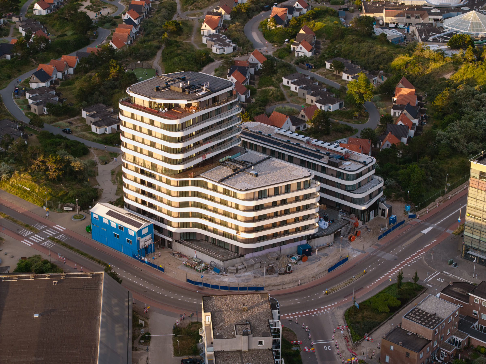
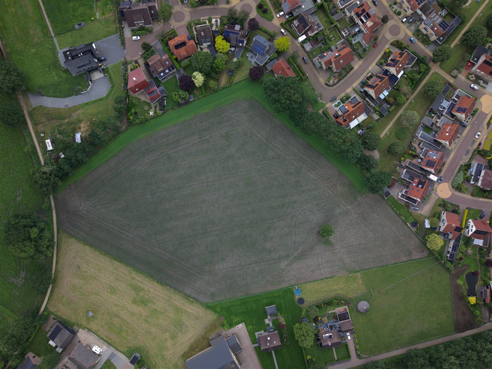
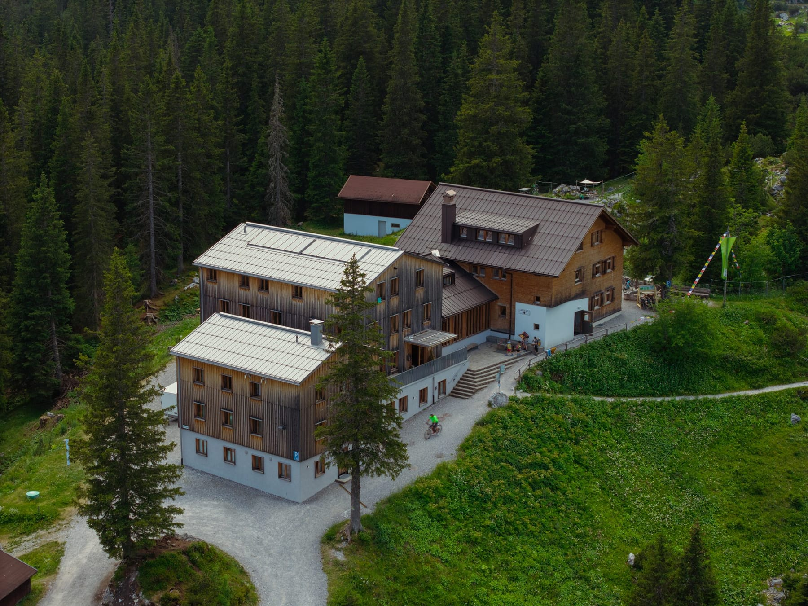

Chaque lieu mérite des images qui correspondent. Je combine différentes techniques pour le meilleur résultat.
Images aériennes cinématiques avec la DJI Air 3S — idéal pour l'immobilier, les parcs de vacances et les domaines.
Fly-throughs dynamiques avec la DJI Avata 2. Les visiteurs vivent votre espace comme s'ils y volaient eux-mêmes.
Photos de drone professionnelles de maisons, terrains et sites d'entreprise — séparément ou dans le cadre d'une vidéo.
L'histoire complète : drone, images au sol, montage et étalonnage colorimétrique en une vidéo puissante pour votre site web et les réseaux sociaux.
Surtout des photos aériennes de terrains et projets de construction — utile pour la documentation, la planification et la promotion. Grâce à des positions de vol précisément enregistrées, je peux capturer des images identiques à un moment ultérieur, par exemple pour des comparaisons avant-après. La vidéo est également possible, mais la photographie reste la priorité.
Grâce à des positions de vol exactement enregistrées, je peux créer exactement la même image des mois plus tard. Déplacez la souris sur l’image et observez la différence.
Un aperçu de ce que je peux créer pour votre lieu.



J'aime travailler avec des entreprises et des particuliers qui souhaitent investir dans la qualité.
Maisons et biens qui se vendent plus rapidement avec de fortes images.
Restaurants et cafés qui attirent des clients avec une vidéo atmosphérique.
Airbnb, campings et parcs de vacances qui se démarquent.
Documentation et promotion de projet dès la première pelleteuse.
Voici les missions les plus courantes, mais je suis certainement ouvert à d'autres projets. Vous doutez que votre idée corresponde ? Envoyez simplement un message — je réfléchis volontiers avec vous.
Je réfléchis volontiers avec vous — gratuitement et personnellement.
Me contacter